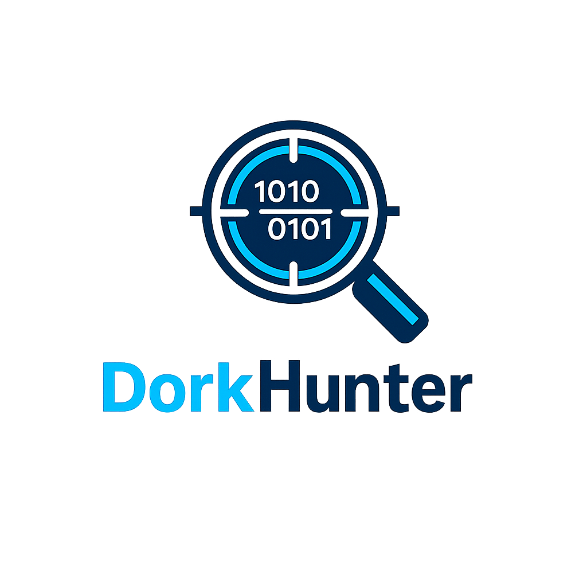

DorkHunter
DorkHunter is an open-source tool designed to simplify Google dorking for OSINT investigations. It automates advanced searches to deliver clear, structured results eliminating the ambiguity often found in raw Google outputs.

Documentation Sections
This repository includes the following key sections:
| Section | Description |
|---|---|
| API Reference | Details on how APIs are integrated to streamline the search and data retrieval process. |
| High-Level Design | Overview of the architecture, database models, and overall system flow. |
| Index | Entry point explaining project organization and quick start guide. |
| Requirements | Functional and non-functional requirements defining the project's scope and goals. |
Workflow
DorkHunter processes user inputs (domains, keywords, or custom dorks), executes targeted searches via integrated APIs, and returns structured results for easy analysis.
Problem Solved
Standard Google searches often return noisy, unstructured results that require manual filtering making OSINT time-consuming and error-prone. DorkHunter addresses this by:
- Applying advanced dorks automatically.
- Parsing and structuring outputs (e.g., tables of subdomains, emails, or exposures).
- Providing exports for reports.
Success Metrics: The project succeeds when users receive clean, actionable, and structured data consistently—reducing recon time and improving accuracy.
Documentation Index
API Reference
Frontend
Requirements
Functional
Getting Started with Google Dorking
Before diving in, ensure you understand the basics of Google dorking.
Learn more here: freeCodeCamp Guide to Google Dorking
About
Created by Njoxpy to streamline OSINT workflows, particularly for digital footprint analysis and exposure scanning. Contributions welcome focus on ethical use only.